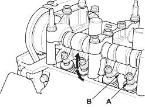
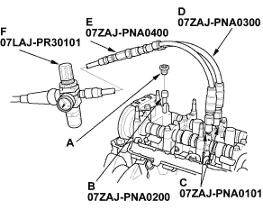

Special Tools Required
- Valve inspection set, 07LAJ-PR30101
- VTEC air adapter, 07ZAJ-PNA0101
- VTEC air stopper, 07ZAJ-PNA0200
- Air joint adapter, 07ZAJ-PNA0300
- Air socket adapter, 07ZAJ-PNA0400
- Remove the cylinder head cover (see page 6-24).
- Set the No. 1 piston at TDC (see step 1 on page 6-13).
- Move the secondary rocker arm (A) for No. 1 cylinder. The secondary rocker arm should move independently of the mid rocker arm (B).
- If the secondary rocker arm does not move, remove the mid, primary and secondary rocker arms as an assembly, and check that the pistons in the rocker arms move smoothly. If any rocker arm needs replacing, replace the mid, primary and secondary rocker arms as an assembly and test.
- If the secondary rocker arm moves freely, go to step 4.

- Repeat step 3 on remaining secondary rocker arms with each piston at TDC. When all the secondary rocker arms pass the test, go to step 5.
- Check that the air pressure on the shop air compressor gauge indicates over 400 kPa (4 kgf/cm2, 57 psi).
- Inspect the valve clearance (see page 6-10).

- Remove the sealing bolt (A) from the relief hole and install the VTEC air stopper (B).

- Remove the No. 3 camshaft holder bolts and install the VTEC air adapters (C) finger-tight.
- Connect the air joint adapter (D), air socket adapter (E) and valve inspection set (F).
- Loosen the valve on the regulator and apply the specified air pressure.
Specified air pressure:
290 kPa (3.0 kgf/cm2, 42 psi)
NOTE: If the synchronising piston does not move after applying air pressure; move the primary or secondary rocker arm up and down manually by rotating the crankshaft clockwise.